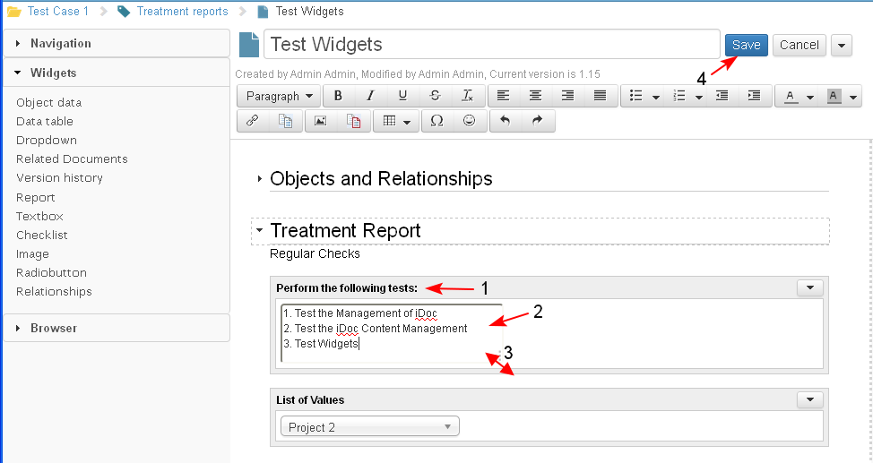

The Text box widget is provided for the sake of creating special forms of intelligent documents. The text box just allows the users to insert text in a field with a border and title.
The presence of a text box in a document does not remove the functionality for inserting text anywhere in a document section.
- The user selects the Textbox widget (1) from the widget palette, drags it and drops it in a selected section in the iDoc (2).
The text box is active only when the iDoc is in Edit mode.

- The user adds the widget title (1), enters the necessary text in the text box (2). The text box is resizable (3).
When the user is ready with the updates, he/ she saves the document (4).

- The system displays the document in preview mode.The text box has a text label (the title of the widget) which is positioned over the text box itself.